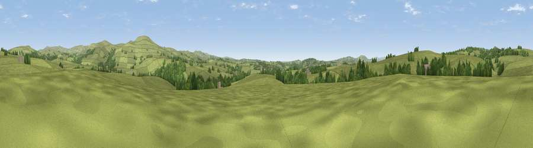

Viewpoint near Tavistock
#33197 in England · top 69% of its area beats it · near TavistockThe view, rendered

A 360° render of this exact spot computed from the terrain model, tree cover and land cover — summer colours, afternoon light, calibrated against photographs of famous viewpoints. Real trees, hedges and buildings will differ in detail.
The panorama
Grey silhouette: terrain skyline in each direction (720 bearings, Earth curvature and refraction included). Dashed green: skyline with trees (+15 m) and buildings (+8 m) as obstacles. Blue strip: how far the ground is visible on each bearing.
Where the view opens
Wedge length = distance to the farthest visible ground on that bearing (vegetation-aware). Rings at 10, 25 and 50 km.
What fills the view
87% grassland · 12% woodland ·
Angular shares of the visible panorama (visual magnitude), not map area. Landscape diversity 0.19 (0–1 Shannon).
Key numbers
More beautiful places nearby
The staircase of upgrades: each row has a higher view potential than everything closer. Driving times are estimates from straight-line distance, calibrated against real road routing — check an actual route before setting out.
| Place | Direction | Drive | Score |
|---|---|---|---|
| Viewpoint near Tavistock | SW · 3 km | ~6 min | 46.2 |
| Viewpoint near North Brentor | NW · 4 km | ~9 min | 58.7 |
| Brent Tor | NNW · 4 km | ~9 min | 73.4 |
| Cox Tor | E · 4 km | ~10 min | 75.9 |
| Viewpoint near Princetown | E · 7 km | ~15 min | 77.0 |
| Hingston Down | SW · 9 km | ~19 min | 78.3 |
| Viewpoint near Dousland | SE · 10 km | ~19 min | 81.0 |
| Viewpoint near Lee Moor | SSE · 16 km | ~28 min | 82.7 |
50.57111, -4.13619 · source: screening · position refined by local search. Computed location — check access rights before visiting.